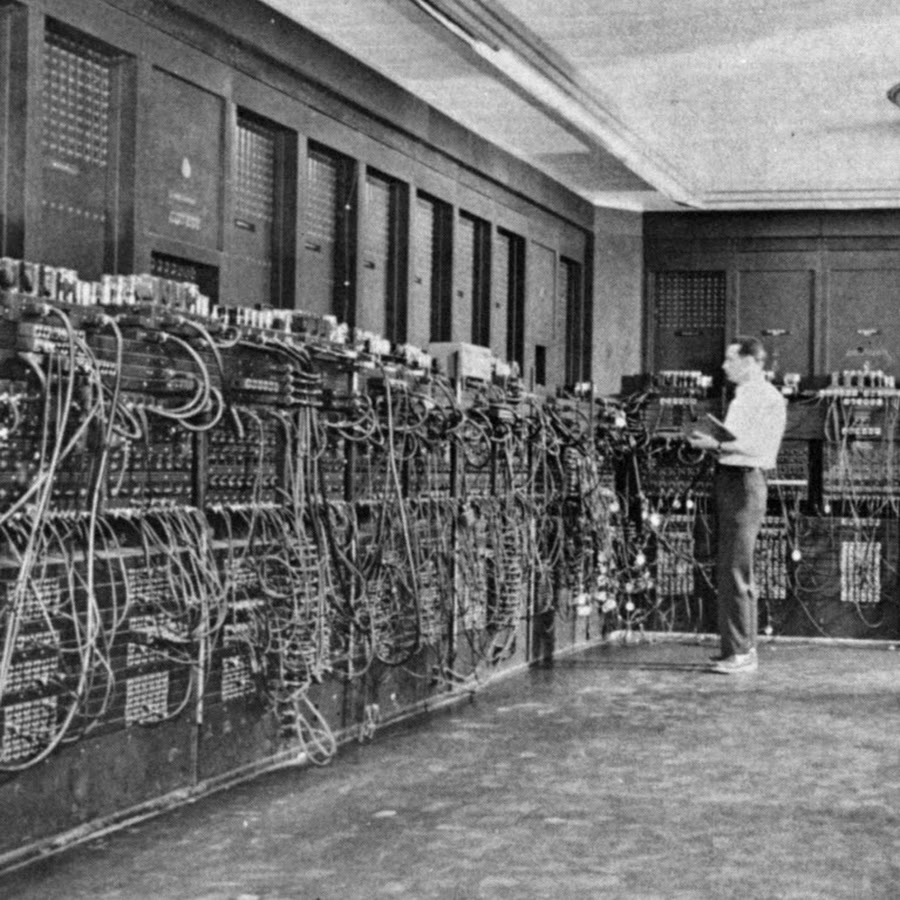

The Era of Vacuum Tubes and Punch Cards (ENIAC)
The Electronic Numerical Integrator and Computer (ENIAC) was the first programmable, electronic, general-purpose digital computer, completed in 1945. Commissioned by the United States Army to calculate artillery firing tables, it represented a monumental leap forward from mechanical and electromechanical computing systems.
ENIAC was massive, occupying an entire room that measured approximately 30 by 50 feet. It contained nearly 18,000 vacuum tubes, 70,000 resistors, 10,000 capacitors, and 5 million hand-soldered joints. Weighing more than 27 tons and consuming roughly 150 kilowatts of electricity, it generated so much heat that dedicated cooling systems were essential to keep it running.
Programming the ENIAC was entirely different from modern software design. It lacked internal memory storage for programs. Instead, operators had to manually configure the machine by flipping massive banks of switches and rerouting heavy patch cords across plugboards. This mechanical setup process could take several days to complete for a single calculation sequence.